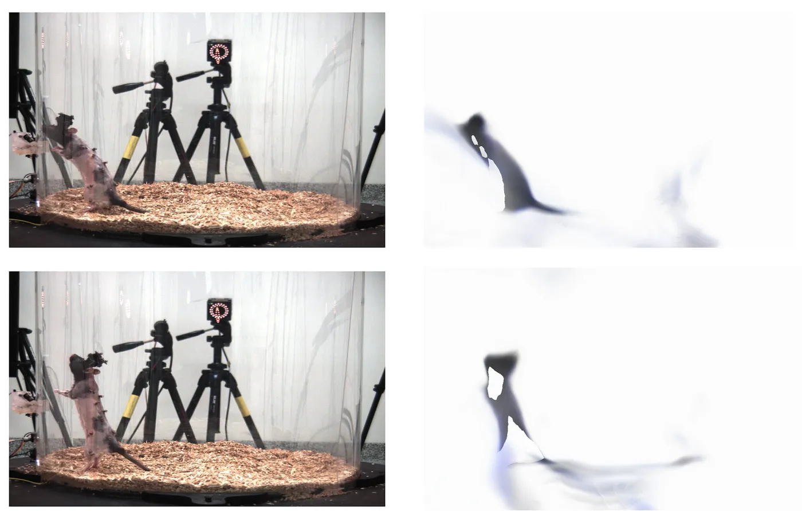

A Novel Approach to 3D Motion Capture Using Neural Radiance Fields
Key Features
- Dynamic NeRF pipeline to reconstruct 3D shapes and motions from monocular videos using 3D keypoints.
- Enabled generation of custom 3D animations for dynamic scenes using only keypoint data.
- Improved rendering speed
PyTorch
CUDA
Computer Vision
NeRF
